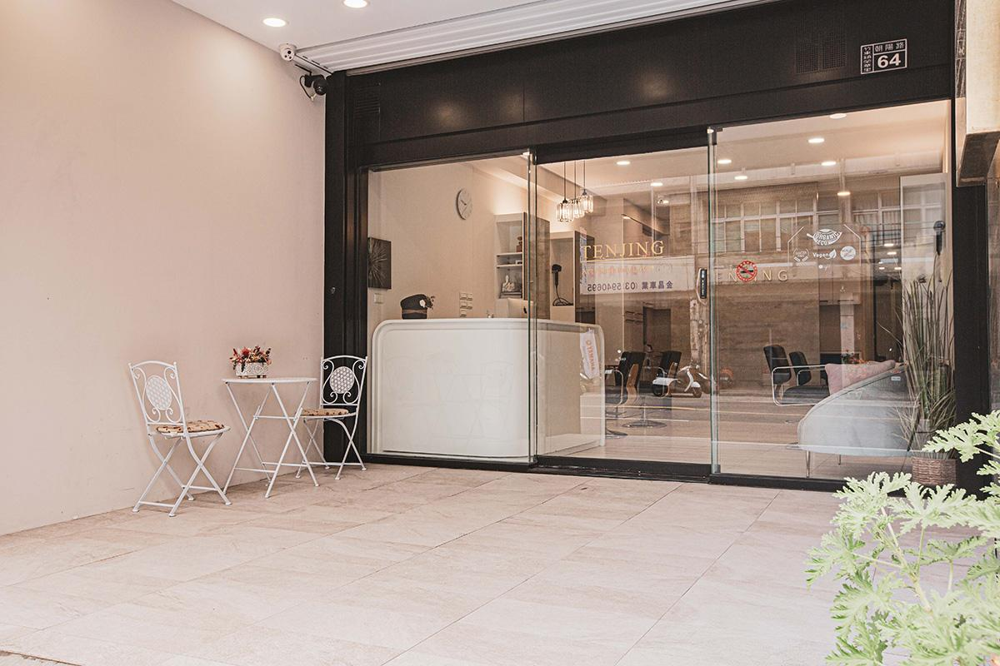
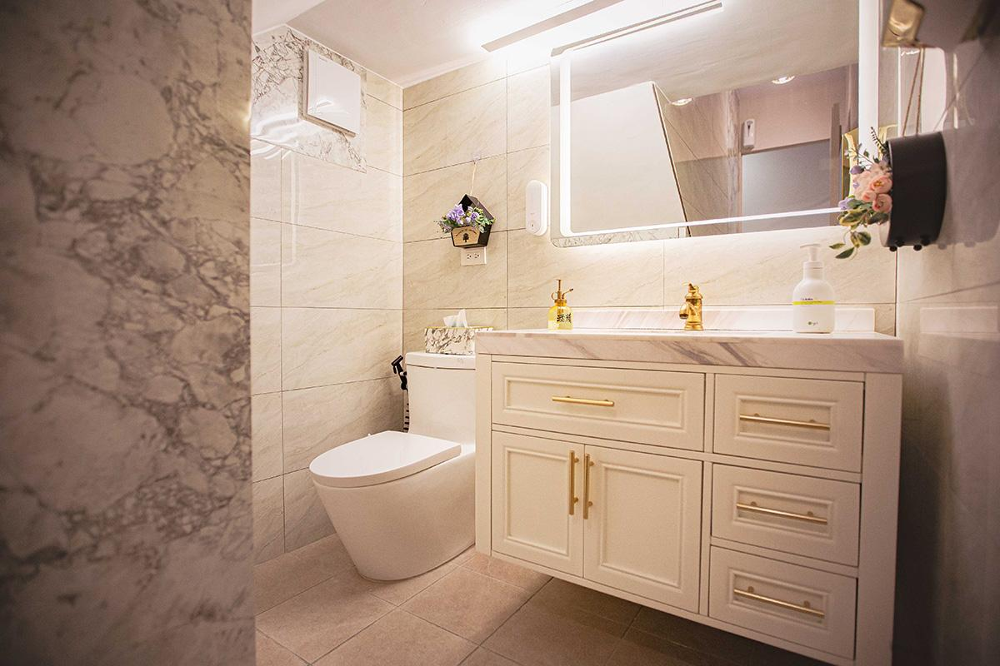
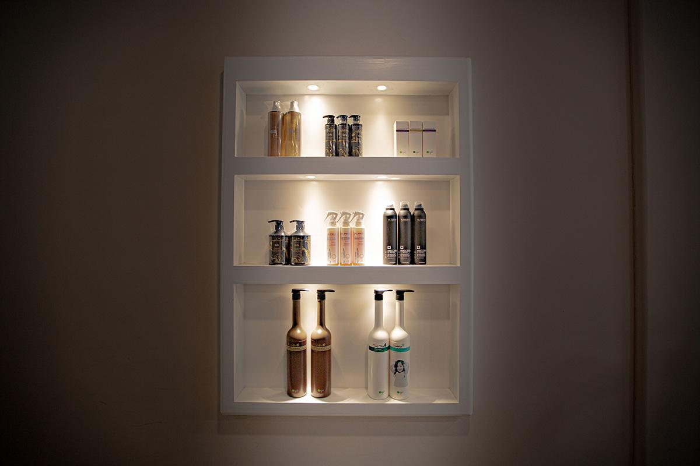

About TENJING
關於 TENJING
真正好的髮型，不只是變漂亮，而是讓妳每天都更有自信。

Every Detail Matters
專注細節，也重視日常
TENJING 相信，好的設計不只是一個髮型，而是從空間、服務、技術，到每一次與顧客互動所累積的完整體驗。
我們不追求制式化結果，而是從髮量、輪廓、膚色、整理習慣與工作需求出發，規劃真正適合每一位客人的方案。
- Hair Extension｜自然接髮與髮量設計
- Scalp Care｜頭皮清潔、舒緩與保養
- Hair Design｜染、燙、護與整體輪廓
- Education｜技術培訓與設計師成長
Our Space
空間，也是服務的一部分





Visit Us
歡迎來到 TENJING
新竹縣竹東鎮朝陽路64號｜週二至週日 11:00–21:00